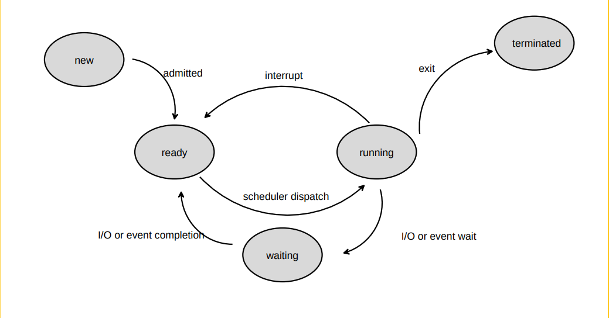
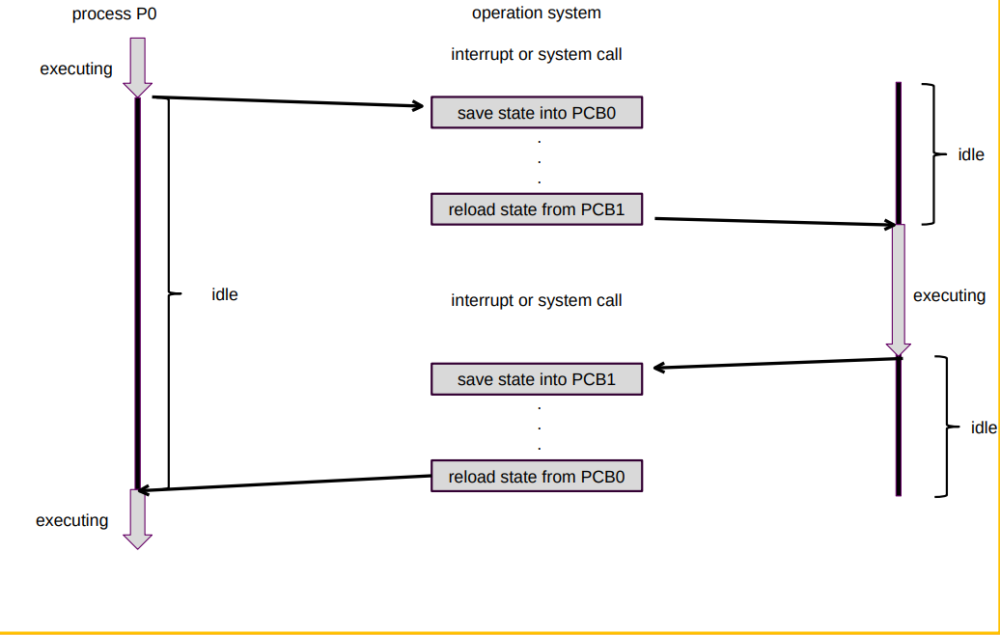

Processes
Process Concept
An operating system executes a variety of programs:
- For batch system: jobs
- For time-shared systems: user programs or tasks
In textbook, the terms job and process are used almost interchangeably.
Process is a program in execution, process execution must progress in sequential fashion. A process includes:
- Program counter
- Stack
- Data section
Process State
As a process executes, it changes state:
- new: The process is being created
- running: Instructions are being executed
- waiting: The process is waiting for some event to occur
- ready: The process is waiting to be assigned to a processor
- terminated: The process has finished execution

Process Control Block
Information associated with each process:
- Process state
- Program counter
- CPU registers
- CPU scheduling information
- Memory management information
- Accounting information
- I/O status information
Process Scheduling

There are four queues in process scheduling:
- Job queue: set of all processes in the system
- Ready queue: set of all processes residing in the main memory, ready and wait to execute
- Device queue: set of processes waiting for an I/O device
- Processes migration between the various queues

And there are two schedulers:
- Long-term scheduler(job scheduler): selects processes should be brought into the ready queue
- Short-term scheduler(CPU scheduler): selects which process should executed next and allocate CPU
The short-term scheduler is invoked very frequently and must be fast, the long-tern scheduler is invoked very infrequently so it may be slow. The long-term scheduler controls he degree of multiprogramming.
Operations on Processes
Context Switch
When CPU switches to another process, the system must save the state of the old process and load the saved state for the new process. The context switch depend on hardware switching.
Context-switch time is a waste; the system does no useful work while switching.
Process Creation
Parent process create children processes, which, in turn create other processes, forming a tree of processes.
There exist three situations in resource sharing of parent and children processes:
- Parent and children processes share all resources
- Children share subset of parent's resources
- Parent and child share no resources
The execution of the processes:
- Parent and children execute concurrently
- Parent waits until children terminate
The address space of processes:
- Child duplicate of parent
- Child has a program loaded into it

Process Termination
Process executes last statement and asks the operating system to decide it:
- Output data from child to parent
- Process's resource are deallocated by operating system
Parent process can terminate execution of children processes.
Cooperating Processes
Independent process cannot affect or be affected by the execution of another process.
Cooperating process can affect or be affected by the execution of another process.
The advantages of process cooperation:
- Information sharing
- Computation speed-up
- Modularity
- Convenience
Producer-Consumer Problem
Paradigm for cooperating processes, producer process produces information that is consumed by a consumer process.
So there need to be a shared memory as a buffer between the producer and consumer processes. And there are two kinds of buffer:
- unbounded buffer place no practical limit on the size of the buffer
- bounded buffer assumes that there is a fixed buffer size
Interprocess Communication
Interprocess communication is mechanism for processes to communicate and to synchronize their actions. Message system is a system used for processes to communicate with each other without resorting to shared variables.
IPC facility provides two operations:
send(message)receive(message)
The message size can be fixed or variable.
The implementation of IPC must to answer there questions:
- How are links established?
- Can a link be associated with more than two processes?
- How many links can there be between every pair of communicating processes?
- What is the capacity of a link?
- Is the size of a message that the link can accommodate fixed or variable?
- Is a link unidirectional or bi-directional?
Direct Communication
Processes must name each other explicitly:
send(P, message): send a message to processPreceive(Q, message): receive a message from processQ
Indirect Communication
Messages are directed and received from mailboxes (ports).
- Each mailbox has a unique id
- Processes can communicate only if they share a mailbox
The indirect communication support operations:
- create a new mailbox
- send and receive messages through mailbox
- destroy a mailbox
Synchronization
Message passing may be either blocking or nonblocking. The blocking is considered synchronous and nonblocking is considered asynchronous.
Send and Receive primitives may be either blocking or non-blocking.
Buffering
Queue of messages attached to the link, can be implemented in three ways:
- Zero capacity: sender must wait for receiver
- Bounded capacity: finite length of messages; sender must wait if link is full
- Unbounded capacity: infinite length and sender never waits